Revitalização das estruturas


Execução
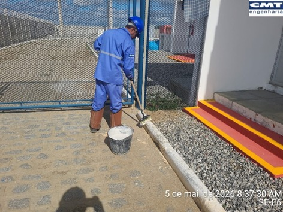
meios-fios

meios-fios

cabanas de extintores

cabanas de extintores
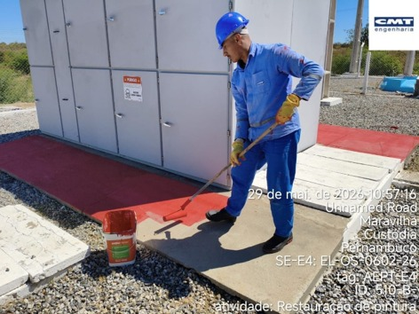
cubículo de média tensão
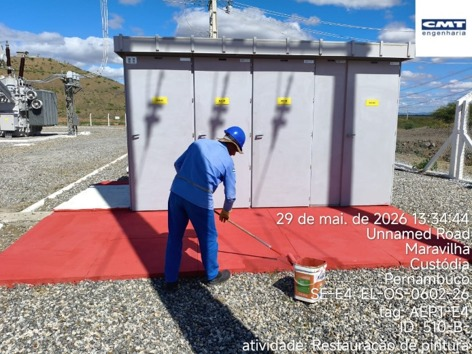
cubículo de média tensão

degraus
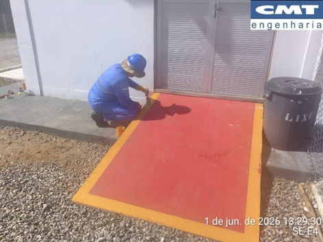
rampas

portões de acesso
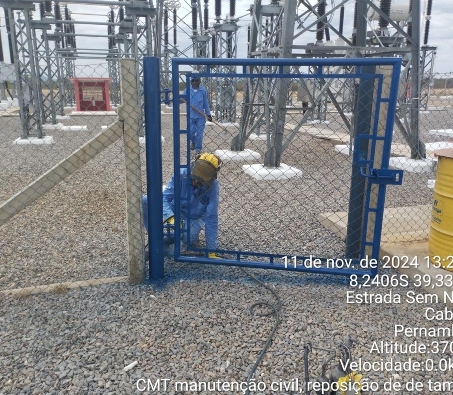
portões de acesso
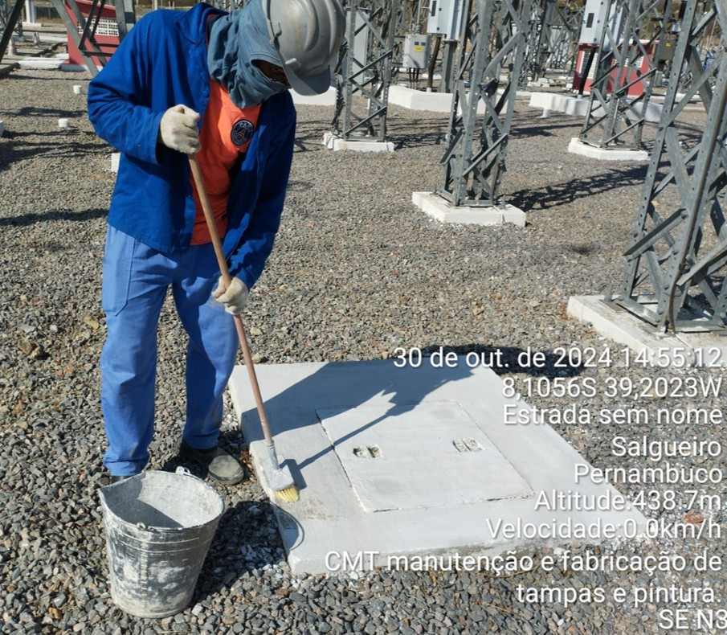

Reposição de meio-fio e canaleta
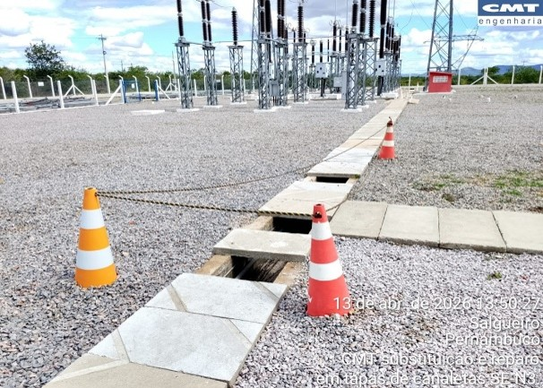
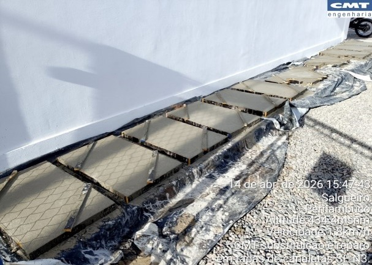


Restauração da pintura das calçadas
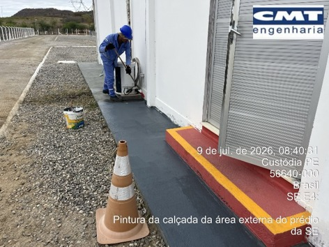
Restauração da pintura das calçadas ao redor da casa de comando.
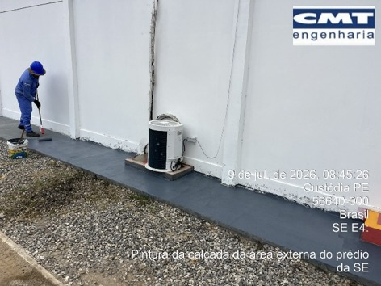
Restauração da pintura das calçadas ao redor da casa de comando.
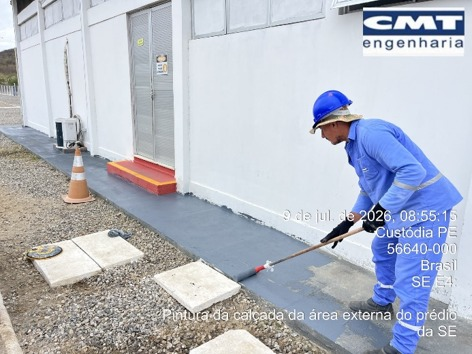
Restauração da pintura das calçadas ao redor da casa de comando.
Reposição da pia da guarita
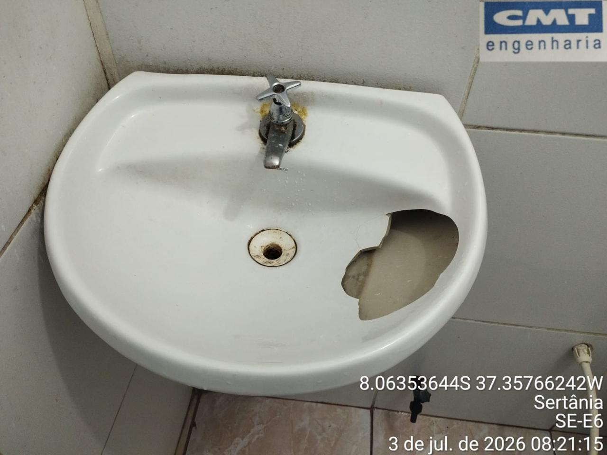
Reposição da pia da guarita da subestação.
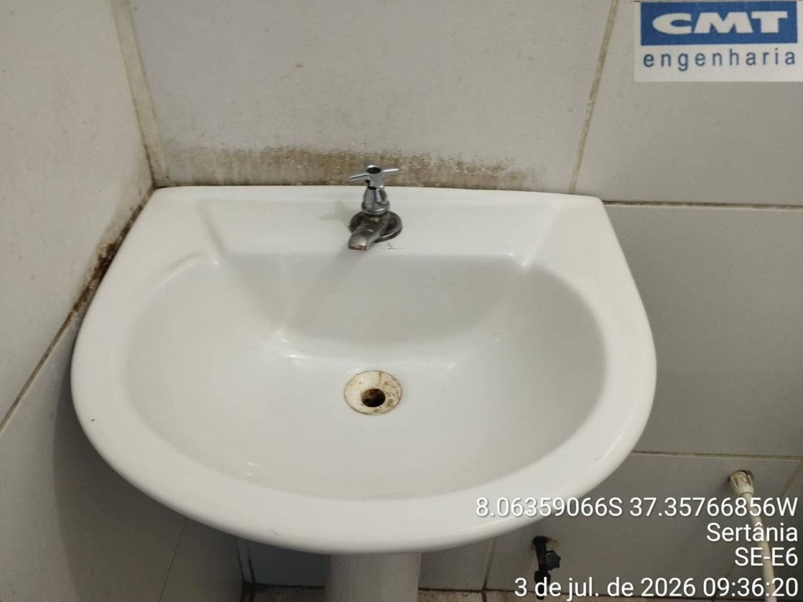
Reposição da pia da guarita da subestação.